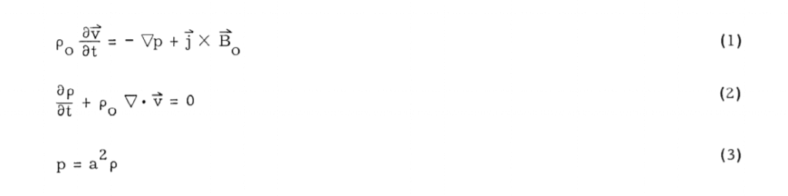
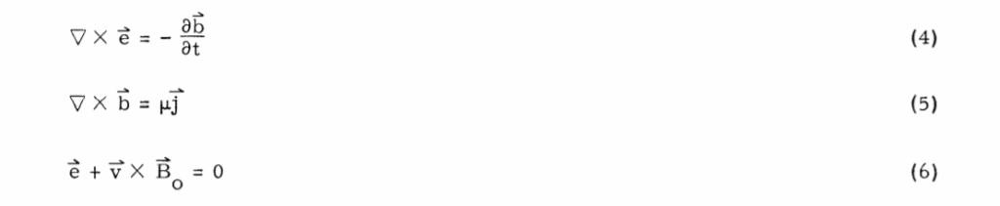
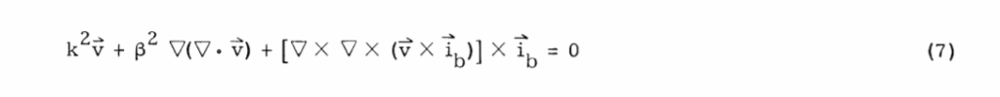
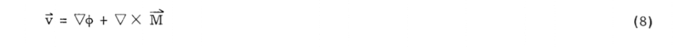
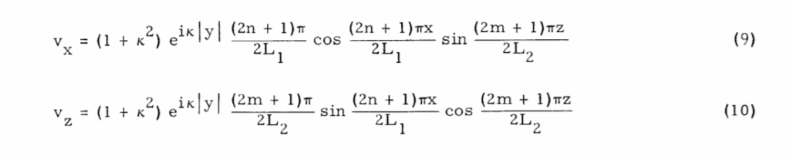
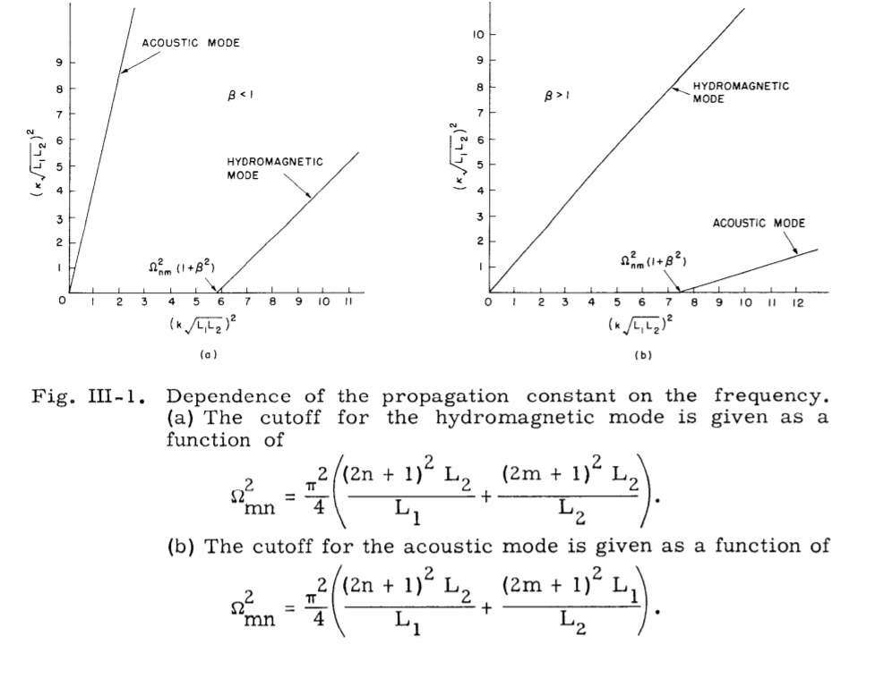
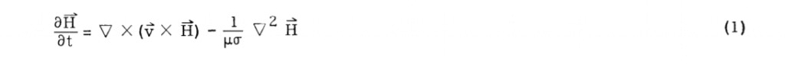
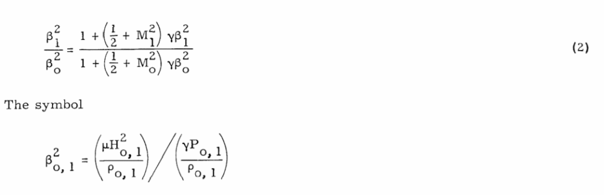
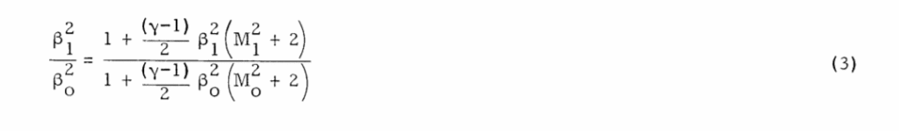

This is part four of a multi-part post. Here we will discuss what happens once you have isolated the human mass from the portal mass, assigned a frequency profile of both, and then established a destination coordinate system. Here we will discuss the actual mechanism that will slide the human “passenger” within the dimensional portal to another world-line.
Introduction
Now, I have read all sorts of speculations of whether or not a person can actually teleport, go into worm-holes, or visit other world-lines. Most writers consider themselves “experts” on this and say that it cannot be done.
Teleportation has not yet been implemented in the real world. There is no known physical mechanism that would allow this. Frequently appearing scientific papers and media articles with the term teleportation typically report on so-called " quantum teleportation ", a scheme for information transfer. An actual teleportation of matter has never been realized by modern science (which is based entirely on mechanistic methods). It is questionable if it can ever be achieved, because any transfer of matter from one point to another without traversing the physical space between them violates Newton's laws, a cornerstone of physics. -Rubens Talukder, Ph.D.
The “experts” have spoken!
To be honest, our understanding of teleportation is as clear as that of black holes, at this point. Dematerializing matters surely consumes a lot of energy and data. We should also take into consideration that the human brain contains so much information that it takes a football field-sized computer to completely replicate its prowess. Remember, your entire being will be disintegrated into particles and the same exact ones should be reassembled at the destination point. Not only that, all your memories and your brain functions must remain intact after the process. Teleportation is similar to being killed and reborn, all in a short period of time. The timing must be precise through the whole of the process, because the slightest disturbance will really alter the state of your being. More importantly, who knows what might happen when an experiment goes wrong? You are relatively lucky if you come off with a missing limb or a different eye color, but things can really go south. Worse, you might not be reborn at all. Good luck getting locked in a quantum limbo for eternity, in that case. Unfortunately, at the moment, we do not have the technology and the know-how to teleport matter visible to the naked. The technique also involves transferring us at the speed of light, and that alone clashes with Einstein’s theory of relativity. Sadly, technology is not the only limitation, but also the current rules of physics. -Gizmo Shack
What ever floats your boat, cowboy.
I’ve done it.
I know that it can be done.
I have experienced it first hand. It is a technology that is in possession of the United States government under the aspects of MAJestic within the ONI.
It’s an advanced technology, that is sure, but it is not impossible. It’s just that the methods involved tend to be esoteric.
So let’s see what I’ve covered within Metallicman, eh?
- Intention / prayer for self-navigation of consciousness through the MWI.
- Magick and ritual, and religious intention.
- MAJestic “dimensional portal” used at NAS NASC Pensacola Florida.
- Use of extraterrestrial technology and a biological apparatus for world-line “anchoring”.
- Outfitting a vehicle for (apparent) “time travel” like John Titor.
- My DIY series on manufacturing your own “Dimensional Portal”.
And here we are. We are at part four of DIY dimensional portal theory and construction.
Navigation
This is a pretty complex subject, don’t you know. And it is so easy to get all bogged down on the “nitty-gritty” details. So let’s just review a little bit of the first three prior posts.
- Introduction. (What you can find on the internet.)
- Gravity isolation of the human traveler from the portal.
- Converting the individual gravity elements into waves and coordinates.
And now, we are going to discuss the actual teleportation of a person from the portal to another world-line…
Please take note that unless you have a dimensional portal at your destination location, you will be forever trapped there, and can never return back home.
Field Resonance Systems
We will use a “field resonance system” to conduct the teleportation. This is a well-known “theory” (well supported by conventional science) embraced by NASA for the future transport of people over large distances.
The field resonance system artificially generates an energy pattern which precisely matches or resonates with a virtual pattern associated with a distant world-line space-time point.
According to the model, if a fundamental or precise resonance is established (using hydromagnetic wave fine-tuning techniques), the person entering the dimensional portal will be very strongly and equally repelled by surrounding virtual patterns.
At the same time, through the virtual many-dimensional structure of space-time, a very strong attraction with the virtual pattern of a distant space-time point will exist.
The model predicts that this combination of very strong forces will result in the translocation of the person from the egress portal’s initial position through the many-dimensional virtual structure to the distant world-line space-time point.
It’s not a “turn key” solution. You just cannot make a device and expect it to work immediately “right off the bat”. The mechanics of this resonance effect will be determined through extensive experimentation, which may also revise the basic resonance requirements. You never know with R&D and NPD efforts.
However, the result, a space-time “jump,” most certainly appears to be supported by astrophysical research.
Several analogies can be used to clarify this effect. It can be described as the temporary formation of an Einstein-Rosen bridge. Which is a tunnel through space-time which connects two different regions in space-time in a way similar to that which has been otherwise proposed for such things as a black hole/white hole (quasar) portal.
The resonance effect can be considered to be analogous to the nuclear particle tunneling phenomena.
In this phenomenon, the wave nature of the particle enables it to tunnel through a potential barrier without having the energy required to go over the barrier.
Following this analogy, the traveler’s wave characteristics are increased dramatically by the artificially generated energy pattern, allowing it to tunnel through the space-time barrier without having the energy normally required to traverse the space between the two space-time points.
The travel times for such trips are expected to be nearly instantaneous.
If complex coordinate destinations are specified, short durations might manifest (seconds to weeks). All of which is dependent on the pattern precision, the amount of energy in the pattern, the space-time distance, and the virtual structure entry point.
Time
There is no such thing as “time”. That is the impression of a train of world-line experiences taken together.
We know it does not really exist.
Time does not have an independent existence in the General Theory of Relativity and it will be redefined in the model as a type of energy flow. However, since time will continue to be used to catalog our experiences in daily life, its use is likely to continue in the description of this type of dimensional travel.
Secondary Resonance Effect
Now there may be other effects and things going on when you enter the egress dimensional port.
If the artificial energy pattern does not precisely match the virtual pattern at a distant world-line space-time point, a secondary resonance effect may be observed.
In this case, the repulsive and attractive forces are not strong enough to relocate the traveler, but the resonance is sufficient to connect the two points through the virtual structure, resulting in energy flow to or from the distant world-line space-time point.
We do not know what this might manifest as.
- Dissemination of a person into “the void”.
- A partial teleportation of a person to the destination, while the rest of that person stays at the egress portal.
- A merging of elements of the traveler with the portal components.
Extreme destinations
In order to explore distant coordinate systems in wildly divergent world-lines, several intermediate world-line space-time jumps would likely be required for safety purposes.
The initial slide would take the traveler into a world-line with only one significant change in the destination coordinates. The next slide would be a destination coordinate with a different major change to the destination coordinates, followed by a slide to a destination with minor coordinate changes for control and reliability considerations. At each step, the predicted and actual locations would be compared and computerized models would be updated accordingly. Exploration of a world-line would probably be best done by a gravimagnetic system that could be carried inside the larger field resonance system.
If the energy pattern generation system of the field resonance portal has an ultrafine-tuning system, world-line space-time jumps to the nearby world-lines could be accomplished. If the portal cycled frequent and very short slides, it would appear in many cases to be in a smooth continuous long-duration slide through world-line space-time.
Hydromagnetic wave fine-tuning techniques
Here we are going to model the process of what happens when a person enters the dimensional portal.
For we know the frequency coordinates of both the person and the portal, and when we bathe the portal in a strong magnetic field and artificially induce the destination coordinates over that of the egress coordinates, the human traveler would be teleported to the new world-line.
In modeling this process we will simplify the equations a bit to simulate the human traveler, and the two portals; egress and destination.
The dynamics of wave propagation in a hydromagnetic waveguide has been well studied and established. For our purposes, we will simplify the equations to represent an electrically conducting conduit (the human traveler) inserted in the field of a steady magnetic field which is the egress dimensional portal. For our purposes, we will treat the human traveler to act as if he/she behaved as plasma.
In the simplest case, the applied field is parallel to the axis of the tube. When the plasma moves with a fluctuating velocity in a direction normal to the axis of the waveguide, the lines of force are shaken to and fro in the direction of the applied velocity. A transverse wave is thereby made to travel along the lines of force.
It is well known to workers in hydromagnetics that the governing relations for the motion of a plasma in a magnetic field are analogous to those describing the behavior of an ideally conducting fluid in the presence of a magnetic field. Hence, our discussion begins with the relations for the conservation of momentum and matter and with the equation of state. As a result of linearization, we find that these equations are

In these expressions, zero subscripts indicate quiescent values, and lower-case letters fluctuating variables. The velocity is denoted by V, the pressure by p, the density by p, the velocity of sound waves in free space by a, the fluctuating local current density by j, and the applied steady magnetic field by B o .
The set of corresponding Maxwellian relations, corrected for relativistic effects, is

The fluctuating magnetic field is denoted by b, the electric field by e, and the permeability of the medium by t. Relations 4, 5, and 6 are valid when the plasma is quasineutral, and when the characteristic dimension of the apparatus is large compared with both the mean free path of the gas and the Debye shielding distance.
It can be readily found that the velocity satisfies the equation

in which k = w/c, the wave number for the Alfven wave velocity in free space. This velocity c equals Bo/(p)/2. The parameter p = a/c is the ratio of the two velocities of wave propagation, and ib indicates a unit vector in the direction of the magnetic field. Similar relations for the other field variables can be obtained by manipulating the set of Eqs. 1-6. The appropriate boundary conditions for the problem require the vanishing
of the normal components of the oscillating velocity and the magnetic field at the walls of the waveguide. If we define the velocity by the identity

it can be shown by substituting Eq. 8 in Eq. 7 that we obtain two simultaneous equations in the velocity potentials c and M. These equations for the general case, when ib is at an arbitrary angle with the axis of the waveguide, are quite complicated and have to be solved approximately.
Two extreme cases, however, allow the equations to be solved exactly.
The results for these two cases will now be briefly indicated.
Case 1. The magnetic field is aligned with the axis of the waveguide. Then the two wave modes propagate along the axis of the waveguide. One of these modes displays the character of a longitudinal, or compressive, wave and is called, in this report, the “acoustic wave.”
The other mode is of transverse character and represents the hydromagnetic mode. Several interesting alternatives may occur that depend upon whether p is less than or greater than unity. When P is less than unity, the acoustic mode has no cutoff for all orders of the wave eigen numbers. This is quite different from the conventional acoustic wave propagation that takes place in a pipe. The hydromagnetic mode does, however, have a cutoff that depends upon the order of the eigen number. It can be checked that whenever p < 1, the pressure from collisions, p, is considerably lower than the hydromagnetic pressure Bo/2L. This means, of course, that the collective behavior of the electrons is controlled, in large part, by the electromagnetic forces. When P > 1, we find that the hydromagnetic mode is then the mode that suffers no cutoff for all orders of the wave eigen number. The acoustic mode, on the other hand, has a cutoff frequency that depends on the order of the wave eigen number. The case of p > 1 indicates that the density of the plasma is high, and is probably more representative of the density of a liquid metal than of the density of a plasma.
An interpretation of the reversal of the noncutoff property of the two waves for B >< 1 can be given by visualizing the behavior of the plasma as it is squeezed by the lines of forces during their transverse motion. For stronger magnetic forces with P < 1, a side distortion of the lines is always accompanied by a longitudinal forward motion of the plasma, hence the acoustic wave suffers no cutoff. A similar explanation can be given for the behavior with P > 1. The expression for the component of the velocity transverse to the axis of the waveguide is given by

in which n, m = 0, ±1, ±2 … ; and 2L 1 2L2 are the width and height of the waveguide section. In expressions 9 and 10, K is the propagation constant for the waves. The functional relation of K on k, the wave number, is shown in graphical form in Fig. III-1 for p 1 and p = 1.
It is obvious that for p = 1, it is not possible to identify the particular wave associated

with the two branches of the function K = f(k).
Case 2. The magnetic field direction is at right angles to the axis of the waveguide.
In this case, the analysis shows that no hydromagnetic wave propagates along the axis of the waveguide. Indeed, consideration of this situation leads us to conclude that the hydromagnetic wave appears as a standing wave along the lines of force, and hence it is trapped between the walls of the waveguide.
The alignment of the magnetic field in another direction besides the two that have been mentioned gives rise to intermediate situations which, however, cannot be obtained as a superposition of the two waves indicated in Eqs. 1 and 2 because Eq. 7 is not linear in the vector ib.
The analysis that has been given cannot be extended to frequencies higher than the ion cyclotron frequency, without taking into account the necessary correction, because the plasma is now composed of two fluids interacting with the magnetic field.
This correction is easily made, and it can be shown that the symmetry of the eigenfunctions in the positive and negative values is lost.
Magnetohydrodynamic Shocks
Whenever you are dealing with plasma (a human) in a magnetic field that undergoes a force or acceleration of some type, you can expect a magnetohydrodynamic shock. In other words, just how useful would this portal be if the person slams into the destination coordinates at a very high speed squashing him/her into jelly?
Luckily this does not seem to be the case.
The work reported here was started for the purpose of investigating the dynamics and the structure of hydromagnetic shocks. In particular, the parameters of the shock that have to be estimated are its thickness, pressure ratio, magnetic-field ratio, and the corresponding density ratio. The preliminary theoretical work was carried out on the basis of a continuum theory.
The calculations follow conventional techniques for studies on shock waves, i. e., the discussion begins with the equation for the conservation of momentum and mass. An appropriate equation of state is also introduced. The hydromagnetic interaction is taken into account by means of a well-known relation for the magnetic field,

where 11 is the intensity of the magnetic field, – is the velocity, N is the permeability, and o- is the conductivity.
It can be shown that a one-dimensional dependence for the variables leads to expressions 2 and 3 which relate the value of the upstream parameters of the shock to its downstream parameters. The relations are valid for distances that are large compared with the thickness of the shock.
Manipulation of all of the equations mentioned in Sec. III-A
leads to a pair of simultaneous expressions, the first of which is

stands for the ratio of the square of the Alfen velocity to the square of the velocity of sound; Mo, 1 is the appropriate hydromagnetic Mach number, defined as the ratio of the local velocity to the Alfvn velocity.
For the second relation, we have

Equations 2 and 3 are sufficient to define completely the state of the gas downstream of the shock.
The experimental verification of this discussion will be carried out by means of an apparatus that will allow a magnetically driven shock to travel in an externally applied uniform magnetic field.
The ponderomotive force (PMF)
The ponderomotive force (PMF) is a ubiquitous nonlinear wave effect arising in plasma physics when applied wave fields or plasma parameters have significant spatial gradients.
We should include the possibility that the PMF may energize magnetospheric ions in significant numbers. In particular, the PMF may play a role in transporting and energizing O+ ions at the destination coordinates. This might result in the experience of the traveler experiencing O+ ionic buildup on their exposed skin. This would appear and feel like they had just come from a warm Summer rain shower.
The PMF can also generate nonlinear coupling between the slow magnetosonic mode and the other hydromagnetic modes. This should lead to limitation of density enhancements and, notably in the case of standing Alfvén waves, to spatial harmonic generation, secularly growing frequency shifts, and saturation of driven wave fields. These effects might result in some minor discomfort for the traveler as they egress from the destination portal coordinates.
Conclusions
The use of the Alan Holt field resonance proposal along with hydromagnetic wave fine-tuning techniques will be sufficient to transport a human from an egress dimensional portal to a destination portal / or coordinate on another world-line.
There are concerns related to…
- Secondary Resonance Effects.
- The ponderomotive force (PMF).
- Magnetohydrodynamic shock.
However, calculations indicate that these concerns are minor, or can be minimized with proper care and due diligence.
Now, with all this being clear, we can now discuss the mechanism used to implement the Alan Holt resonance transfer procedure within the magnetic field when a person enters into the egress portal. We will cover that in the next post. Post five. Stay tuned.